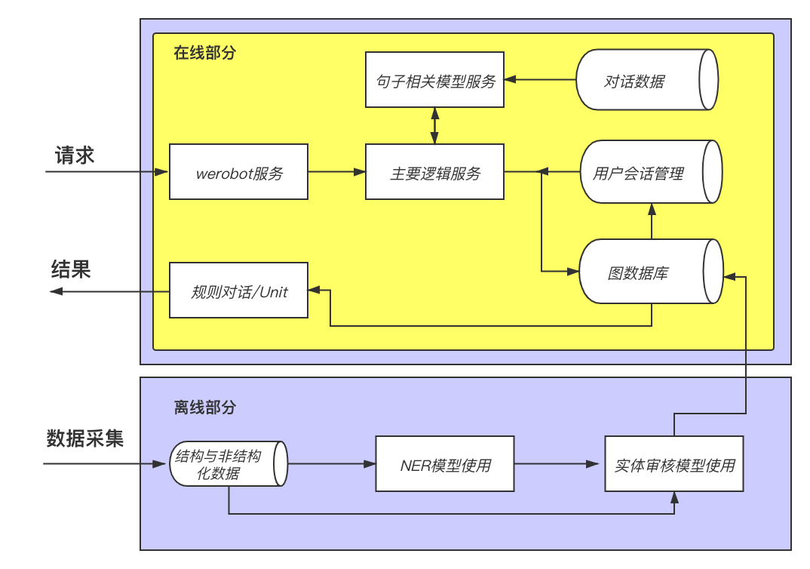
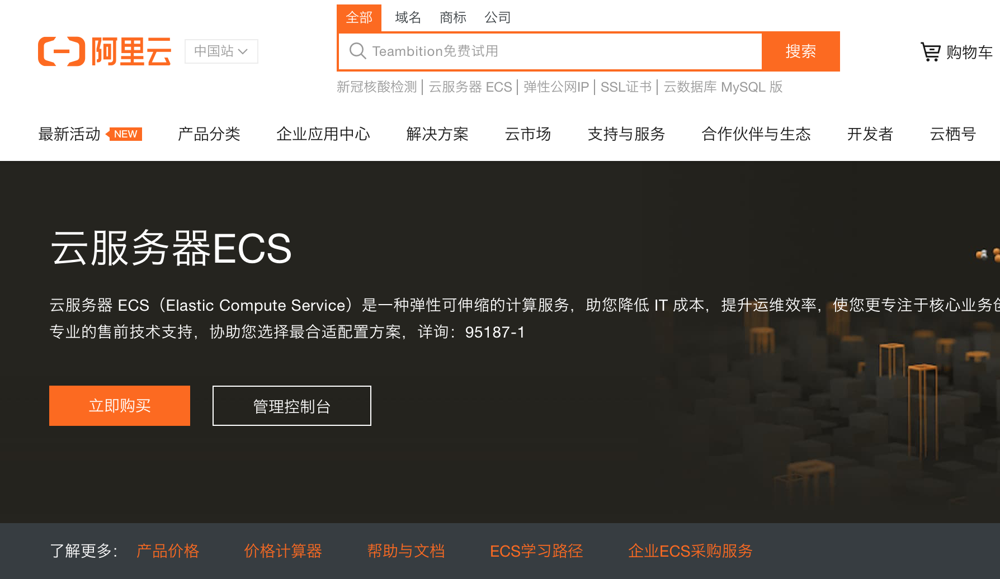
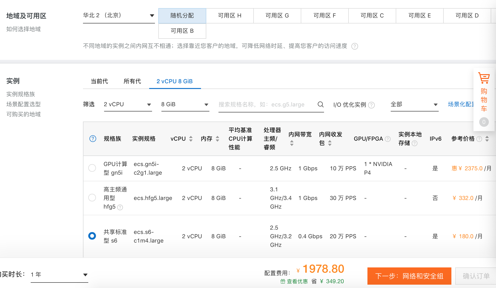
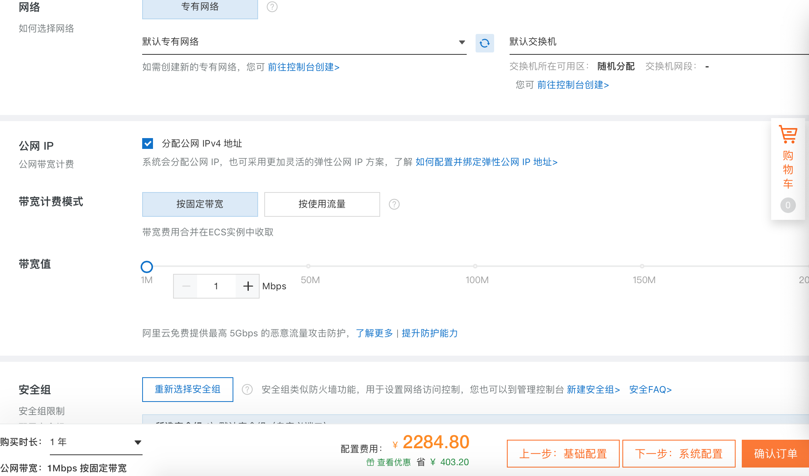
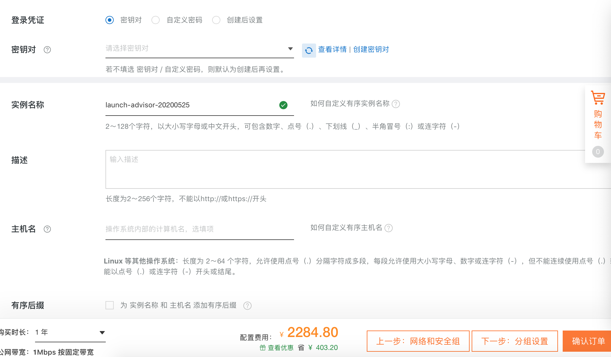
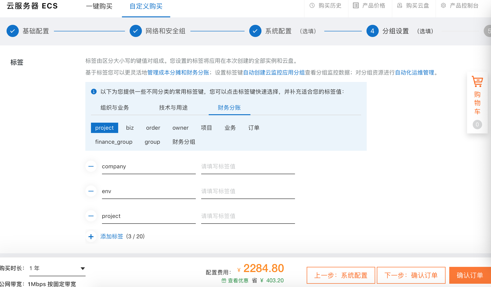
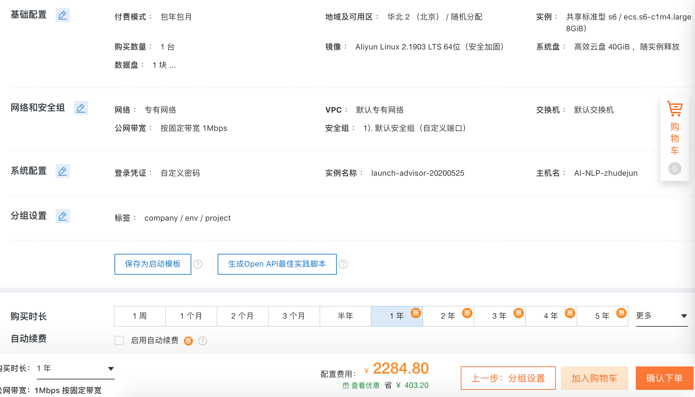
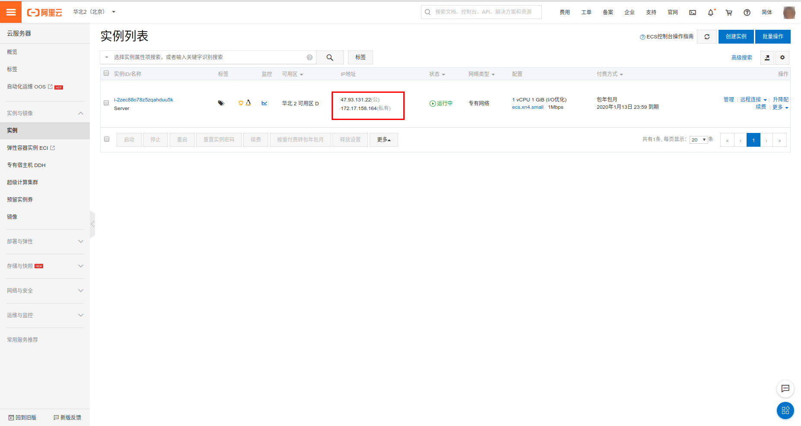
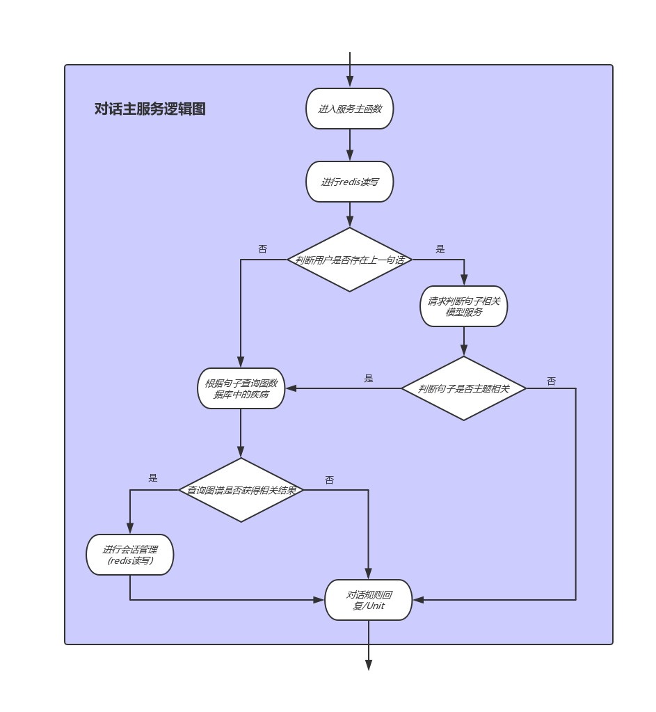

第七章:在线部分
7.1 在线部分简要分析¶
-
学习目标：
- 了解在线部分的核心组成。
- 了解各个核心组成部分的作用。
-
在线部分架构图：

-
在线部分简要分析：
- 根据架构图，在线部分的核心由三个服务组成，分别是werobot服务，主要逻辑服务，句子相关模型服务。这三个服务贯穿连接整个在线部分的各个模块。
-
werobot服务作用：
- 用于连接微信客户端与后端服务，向主要逻辑服务发送用户请求，并接收结构返回给用户。
-
主要逻辑服务作用：
- 用于处理核心业务逻辑，包括会话管理，请求句子相关模型服务，查询图数据库，调用Unit API等。
-
句子相关模型服务：
- 用于封装训练好的句子相关判断模型，接收来自主要逻辑服务的请求，返回判断结果。
7.2 werobot服务构建¶
-
学习目标：
- 掌握werobot服务的构建过程。
-
werobot服务的构建过程可分为四步：
- 第一步：获取服务器公网IP
- 第二步：配置微信公众号
- 第三步：使用werobot启动服务脚本
- 第四步：使用微信公众号进行测试
-
第一步：获取服务器公网IP
-
登陆阿里云官网(https://www.aliyun.com/product/ecs):
 -
进行基本配置，选择所在地域，实例类型，镜像，存储，购买时长
 -
选择网络和安全组(默认配置)
 -
设置密码，实例名称，主机名
 -
配置分组设置(默认配置)
 -
确认订单并支付
 - 查看服务器公网IP

-
-
第二步：使用公网IP配置微信公众号
- 注册微信订阅号(https://mp.weixin.qq.com), 并在基本配置中进行URL和Token的设定
-
第三步：使用werobot启动服务脚本
-
安装werobot
pip install werobot -
进行启动脚本的编写
* 启动服务脚本# 导入werobot和发送请求的requests import werobot import requests # 主要逻辑服务请求地址 url = "http://161.117.187.37:5000/v1/main_serve/" # 服务超时时间 TIMEOUT = 3 # 声明微信访问请求【框架将辅助完成微信联通验证】 robot = werobot.WeRoBot(token="doctoraitoken") # 设置所有请求（包含文本、语音、图片等消息）入口 @robot.handler def doctor(message, session): try: # 获得用户uid uid = message.source try: # 检查session，判断该用户是否第一次发言 # 初始session为{} # 如果session中没有{uid:"1"} if session.get(uid, None) != "1": # 将添加{uid:"1"} session[uid] = "1" # 并返回打招呼用语 return '您好，我是智能客服小艾，有什么需要帮忙的吗?' # 获取message中的用户发言内容 text = message.content except: # 这里使用try...except是因为我用户很可能出现取消关注又重新关注的现象 # 此时通过session判断，该用户并不是第一次发言，会获取message.content # 但用户其实又没有说话，获取message.content时会报错 # 该情况也是直接返回打招呼用语 return '您好，我是智能客服小艾，有什么需要帮忙的吗 ?' # 获得发送主要逻辑服务的数据体 data = {"uid": uid, "text": text} # 向主要逻辑服务发送post请求 res = requests.post(url, data=data, timeout=TIMEOUT) # 返回主要逻辑服务的结果 return res.text except Exception as e: print("出现异常：", e) return "对不起，机器人客服正在休息。.." # 让服务器监听在 0.0.0.0:80 robot.config["HOST"] = "0.0.0.0" robot.config["PORT"] = 80 robot.run() # 代码位置：/data/wr.py```shell python /data/wr.py
-
# 也可以使用gunicorn启动该脚本 gunicorn -w 1 wr:robot.wsgi ```
-
第四步：使用微信进行测试
-
小节总结：
- 学习了werobot服务的构建过程：
- 第一步：获取服务器公网IP
- 第二步：配置微信公众号
- 第三步：使用werobot启动服务脚本
- 第四步：使用微信公众号进行测试
- 学习了werobot服务的构建过程：
7.3 主要逻辑服务¶
-
学习目标：
- 了解该服务中的主要逻辑。
- 掌握构建主要逻辑服务的过程。
-
主要逻辑图：
 -
逻辑图分析：
-
主要逻辑服务接收werobot发送的请求后，根据用户id查询redis查找用户上一次说过的话，根据结果判断是否为他的第一句。
-
如果是第一句话，直接查询数据库，判断句子中是否包含症状实体，并返回该症状连接的疾病，并填充在规则对话模版中，如果查询不到则调用Unit API返回结果。
-
如果不是该用户的第一句话，则连同上一句话的内容一起请求句子相关模型服务，判断两句话是否讨论同一主题，如果是，则继续查询图数据库，如果不是，使用unit api返回结果。
-
-
构建主要逻辑服务的步骤：
- 第一步：导入必备工具和配置
- 第二步：完成查询neo4j数据库的函数
- 第三步：编写主要逻辑处理类
- 第四步：编写服务中的主函数
- 第五步：使用gunicorn启动服务
- 第六步：编写测试脚本并进行测试：
第一步：导入必备工具和配置¶
# 服务框架使用Flask
# 导入必备的工具
from flask import Flask
from flask import request
app = Flask(__name__)
# 导入发送http请求的requests工具
import requests
# 导入操作redis数据库的工具
import redis
# 导入加载json文件的工具
import json
# 导入已写好的Unit API调用文件
from unit import unit_chat
# 导入操作neo4j数据库的工具
from neo4j import GraphDatabase
# 从配置文件中导入需要的配置
# NEO4J的连接配置
from config import NEO4J_CONFIG
# REDIS的连接配置
from config import REDIS_CONFIG
# 句子相关模型服务的请求地址
from config import model_serve_url
# 句子相关模型服务的超时时间
from config import TIMEOUT
# 规则对话模版的加载路径
from config import reply_path
# 用户对话信息保存的过期时间
from config import ex_time
# 建立REDIS连接池
pool = redis.ConnectionPool(**REDIS_CONFIG)
# 初始化NEO4J驱动对象
_driver = GraphDatabase.driver(**NEO4J_CONFIG)
-
代码位置：/data/doctor_online/main_serve/app.py
-
配置文件内容如下：
REDIS_CONFIG = {
"host": "0.0.0.0",
"port": 6379
}
NEO4J_CONFIG = {
"uri": "bolt://0.0.0.0:7687",
"auth": ("neo4j", "********"),
"encrypted": False
}
model_serve_url = "http://0.0.0.0:5001/v1/recognition/"
TIMEOUT = 2
reply_path = "./reply.json"
ex_time = 36000
- 代码位置：/data/doctor_online/main_serve/config.py
- 规则对话模版文件reply.json内容如下：
{
"1": "亲爱的用户，在线医生一个医患问答机器人，请您说一些当前的症状吧！",
"2": "根据您当前的症状描述，您可能患有以下疾病，%s, 再想想还有更多的症状吗?",
"3": "对不起，您所说的内容超出了在线医生的知识范围。请尝试换一些描述方式！",
"4": "您的这次描述并没有给我带来更多信息，请您继续描述您的症状。"
}
- 代码位置：/data/doctor_online/main_serve/reply.json
第二步：完成查询neo4j数据库的函数¶
def query_neo4j(text):
"""
description: 根据用户对话文本中的可能存在的症状查询图数据库。
:param text: 用户的输入文本。
:return: 用户描述的症状对应的疾病列表。
"""
# 开启一个session操作图数据库
with _driver.session() as session:
# cypher语句，匹配句子中存在的所有症状节点，
# 保存这些节点并逐一通过关系dis_to_sym进行对应病症的查找，返回找到的疾病名字列表。
cypher = "MATCH(a:Symptom) WHERE(%r contains a.name) WITH \
a MATCH(a)-[r:dis_to_sym]-(b:Disease) RETURN b.name LIMIT 5" %text
# 运行这条cypher语句
record = session.run(cypher)
# 从record对象中获得结果列表
result = list(map(lambda x: x[0], record))
return result
-
代码位置：/data/doctor_online/main_serve/app.py
-
调用：
if __name__ == "__main__": text = "我最近腹痛!" result = query_neo4j(text) print("疾病列表：", result) -
输出效果：
疾病列表：['胃肠道癌转移卵巢', '胃肠道功能紊乱', '胃肠积液', '胃肠型食物中毒', '胃结核']
第三步：编写主要逻辑处理类¶
# 实现处理不同分支的函数
class Handler:
def __init__(self, uid, cur_text, pre_text, r, replay):
"""
:param uid: 用户唯一标示uid
:param cur_text: 该用户本次输入的文本
:param pre_text: 该用户上次输入的文本
:param r: redis数据库的连接对象
:param reply: 规则对话模版加载到内存的对象(字典)
"""
self.uid = uid
self.cur_text = cur_text
self.pre_text = pre_text
self.r = r
self.reply = replay
def first_sentence(self):
"""首句处理函数"""
# 直接查询图数据库，并获得结果
s = query_neo4j(self.cur_text)
# 判断结果为空列表，则直接使用UnitAPI返回
if not s:
return unit_chat(self.cur_text)
# 将s存储为"上一次返回的疾病"
self.r.hset(str(self.uid), 'previous_d', str(s))
# 设置过期时间
self.r.expire(str(self.uid), ex_time)
# 将列表转化为字符串，添加到规则对话模版中返回
res = "，".join(s)
return self.reply['2'] % res
def non_first_sentence(self):
"""
description: 非首句处理函数
:return: 根据逻辑图返回非首句情况下的输出语句
"""
# 尝试请求模型服务，若失败则打印错误结果
try:
data = {'pre_text': self.pre_text, 'cur_text': self.cur_text}
result = requests.post(model_serve_url, data=data, timeout=TIMEOUT)
if result.text == '0':
# 如果判断这一句和上一句没有关联，则进入百度闲聊
# return unit_chat(self.cur_text)
# 还可以把这次输入当作单独一次对待
return self.first_sentence()
except Exception as e:
print('模型异常：', e)
return unit_chat(self.cur_text)
# 继续查询图数据库，并获得结果
s = query_neo4j(self.cur_text)
# 判断结果为空列表，则直接使用UnitAPI返回
if not s: return unit_chat(self.cur_text)
# 若结果不为空，获取上一次已回复的疾病pre_disease
pre_disease = self.r.hget(str(self.uid), 'previous_d')
if pre_disease:
# new_disease是本次需要存储的疾病，是已经存储的疾病与本次查询到疾病的并集
new_disease = list(set(s)|set(pre_disease))
# res是需要返回的疾病，是本次查询到的疾病与已经存储的疾病的差集
res = list(set(s) - set(pre_disease))
else:
# 如果pre_disease为空，则它们相同都是本次查询结果s
res = list(set(s))
new_disease = res
# 存储new_disease覆盖之前的pre_disease
self.r.hset(str(self.uid), 'previous_d', str(new_disease))
self.r.expire(str(self.uid), ex_time)
# 将列表转化为字符串，添加到规则对话模版中返回
if not res:
return self.reply['4']
else:
res = '，'.join(res)
return self.reply['2'] % res
- 代码位置：/data/doctor_online/main_serve/app.py
第四步：编写服务中的主函数¶
# 设定主要逻辑服务的路由和请求方法
@app.route("/v1/main_serve/", methods=["POST"])
def main_serve():
# 接收werobot服务发送的请求
uid = request.form['uid']
cur_text = request.form['text']
# 从redis连接池中获得一个活跃连接
r = redis.StrictRedis(connection_pool=pool)
# 根据用户的uid获取是否存在上一句话
pre_text = r.hget(str(uid), 'previous')
# 设置当前的输入为`上一句话`
r.hset(str(uid), 'previous', cur_text)
# 获取对话模板
reply = json.load(open(reply_path, mode='r'))
# 构造handler，根据是否是第一次请求实现逻辑
handler = Handler(uid, cur_text, pre_text, r, reply)
# 如果pre_text存在，说明不是第一句话
if pre_text:
# 调用non_first_sentence方法
return handler.non_first_sentence()
else:
# 否则调用first_sentence()方法
return handler.first_sentence()
第五步：使用gunicorn启动服务¶
gunicorn -w 1 -b 0.0.0.0:5000 app:app
# -w 代表开启的进程数，我们只开启一个进程
# -b 服务的IP地址和端口
# app:app 是指执行的主要对象位置，在app.py中的app对象
- 代码位置：在/data/doctor_online/main_serve/路径下执行。
第六步：编写测试脚本并进行测试¶
- 编写测试脚本：
import requests
# 定义请求url和传入的data
url = "http://0.0.0.0:5000/v1/main_serve/"
data = {"uid":"13424", "text": "头晕"}
# 向服务发送post请求
res = requests.post(url, data=data)
# 打印返回的结果
print(res.text)
- 运行脚本：
python test.py
- 输出效果：
根据您当前的症状描述，您可能患有以下疾病，中毒，虫媒传染病，小儿肥厚型心肌病，血红蛋白E病，铍中毒，再想想还有更多的症状吗?
-
小节总结：
-
学习了服务的主要逻辑：
- 主要逻辑服务接收werobot发送的请求后，根据用户id查询redis查找用户上一次说过的话，根据结果判断是否为他的第一句。
- 如果是第一句话，直接查询数据库，判断句子中是否包含症状实体，并返回该症状连接的疾病，并填充在规则对话模版中，如果查询不到则调用Unit API返回结果。
- 如果不是该用户的第一句话，则连同上一句话的内容一起请求句子相关模型服务，判断两句话是否讨论同一主题，如果是，则继续查询图数据库，如果不是，使用unit api返回结果。
-
构建主要逻辑服务的步骤：
- 第一步：导入必备工具和配置
- 第二步：完成查询neo4j数据库的函数
- 第三步：编写主要逻辑处理类
- 第四步：编写服务中的主函数
- 第五步：使用gunicorn启动服务
- 第六步：编写测试脚本并进行测试
-
7.4 句子主题相关任务¶
- 句子主题相关的任务的工作在我们这里使用AI模型实现，包括模型训练和使用的整个过程，因此这里内容以独立一章的形成呈现给大家，具体内容在第八章：句子主题相关任务